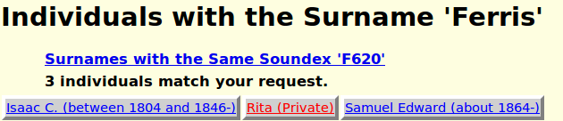

Index of Individuals: Help
Selecting a surname displays a list of all of the individuals with that surname, as long as there are less than the value of the limit parameter, for which the default value is 100. If there are more than limit individuals with that surname then limit are shown and left and right arrows are displayed to permit you to scroll through the complete set.
There is also a link to a summary of all of the surnames that match the same SOUNDEX code.
In addition authorized contributors can manipulate additional information kept a surname by clicking on the button.

The fields IDNR and Surname cannot be modified because they are the identifying keys of the record. The SOUNDEX code is derived from the surname and represents a way to perform a search which is less sensitive to spelling mistakes.
The Regular Expression Pattern is used in situations where too many surnames match the SOUNDEX code. It permits defining a more detailed pattern match. When you modify this field and then tab out a dialog pops up to summarize what will happen with this particular expression. This dialog may report a violation of the supported Regular Expression syntax, or it will display a list of all of the surnames which match the supplied pattern.
The Notes field is a place to store information about the surname. This can be anything. The field supports rich text, like a word processor and you can store many pages of descriptive information, including links to other web-sites. You can copy information from other documents, including word processor documents. You can copy information from other web sites but it is plagiarism if you copy information without also including a link back to where you got the information.